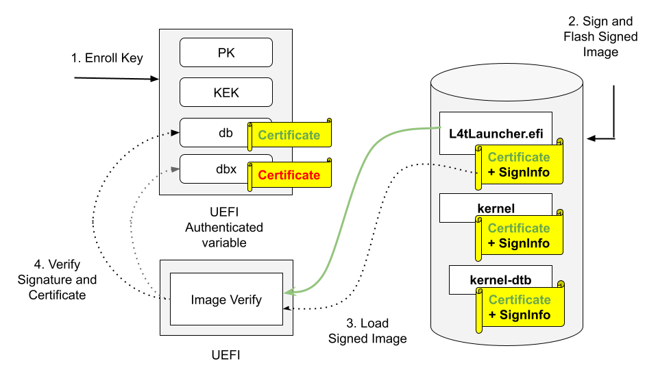
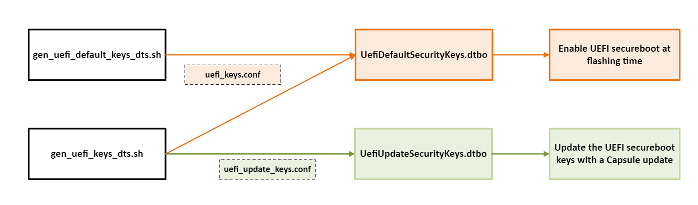
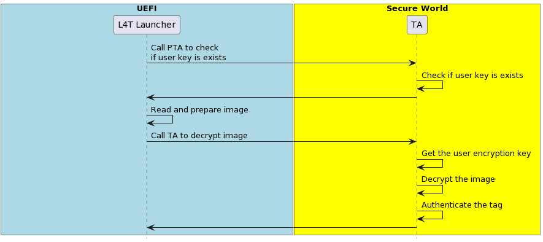
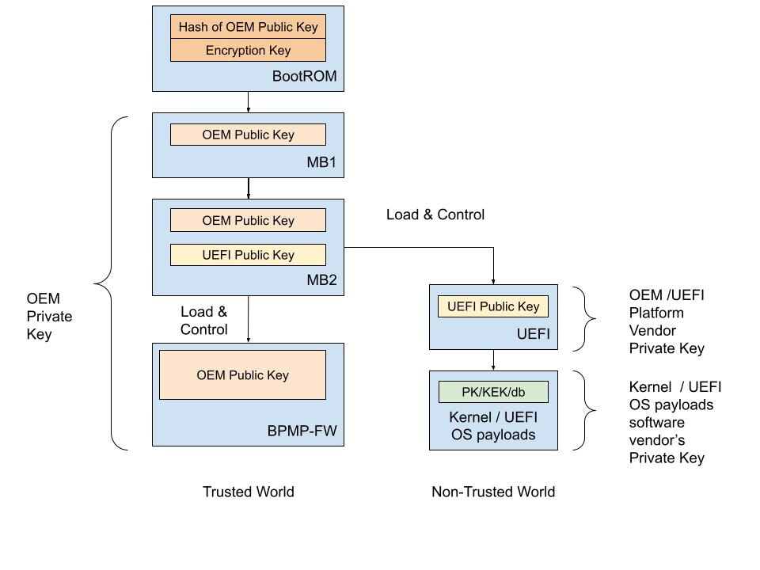

Secure Boot#
This section applies to the Jetson Orin NX, Jetson Orin Nano, and Jetson AGX Orin series.
NVIDIA® Jetson™ Linux provides boot security. Secure Boot prevents execution of unauthorized boot codes through the chain of trust. The root-of-trust is an on-die BootROM code that authenticates boot codes such as BCT, Bootloader, and warm boot vector using Public Key Cryptography (PKC) keys stored in write-once-read-multiple fuse devices. On Jetson platforms that support Secure Boot Key (SBK), you can use it to encrypt Bootloader images.
NVIDIA SoCs contain multiple fuses that control different items for security and boot.
The Jetson BSP package contains program scripts/tools and instructions to provide security services during the booting.
The root-of-trust that uses the NVIDIA SoCs fuses to authenticate boot codes ends at the Bootloader. After this, the current Bootloader (UEFI) will use UEFI’s Security Keys scheme to authenticate its payloads.
To enable UEFI Secure Boot, refer to UEFI Secure Boot.
Overall Fusing and Signing Binaries Flow#
Note
The odmfuse.sh tool has been deprecated in favor of the Factory Secure Key Provisioning tool. This new tool uses the same Fuse Configuration file format and key formats as the odmfuse.sh tool. Therefore, even though all sections related to odmfuse.sh are no longer applicable, all other sections still apply. Refer to Factory Secure Key and Expansion Key Provisioning for more information.
The Secure Boot process with PKC and SBK requires you to:
Generate a PKC key pair.
Prepare an SBK key.
Prepare K1/K2 keys.
Prepare EKB.
Prepare the Fuse Configuration file.
Burn fuses using
odmfuse.shscript with a Fuse Configuration file.Flash the device with secured images (using
flash.shwith-u-voptions).
Prerequisites Secure Boot#
An X86 host running Ubuntu 18.04 LTS, or 20.04 LTS.
libftdi-devfor USB debug port support.openssh-serverpackage for OpenSSL.Full installation of the latest Jetson Linux release on the host.
A USB cable connecting the Jetson device to the host.
If necessary, a USB cable that connects the Jetson device’s debug serial port to the host.
Fuses and Security#
NVIDIA SoCs contain multiple fuses that control different items for security and boot. Once a fuse bit is set to 1, you cannot change its value back to 0. For example, a fuse value of 1 (0x01) can be changed to 3 (0x03) or 5 (0x05), but not to 4 (0x4) because bit 0 is already programmed to 1.
After the SecurityMode (also known as odm_production_mode) fuse is burned with a value of 0x1, all additional fuse write requests will be blocked.
However, some of the ODM fuses are still writable. For more details, refer to the specific SoC fuses documents.
To burn fuses, you can use the odmfuse.sh script with a fuse configuration file.
The fuse configuration file is an XML file that contains the fuse data to be burned.
Fuse Configuration File#
The fuse configuration file, which is an XML file, contains the fuse data, a list of fuses, and the value to be burned in each fuse.
The odmfuse.sh tool uses this XML file to program the fuses.
A fuse configuration file contains a <genericfuse> </genericfuse> tag pair, which contains one <fuse/> tag for each fuse to be burned.
The following template shows the format of the file:
<genericfuse MagicId="0x45535546" version="1.0.0">
<fuse name="<name>" size="<size>" value="<value>"/>
<fuse name="<name>" size="<size>" value="<value>"/>
. . .
</genericfuse>
Where:
<name>is the name of a fuse. Supported fuse names are listed in the SoC’s Reference Fuse Configuration File.
For Orin SoC, refer to Orin Reference Fuse Configuration File
<size>is the size of the fuse in bytes.
<value>is the value to be burned into the fuse, with two hexadecimal digits per byte.
MagicId of “0x45535546” is used by the target-binary and must not be changed.
odmfuse.sh script burns fuses in the order that they appear in the fuse configuration file. If two or more fuses’ values are interdependent, the independent fuses must be specified before the dependent one so that they are burned first. That is, if the values that can be burned into fuse Y depend on the value of fuse X, the fuse configuration file must specify fuse X first and then Y. This way, the odmfuse.sh script will burn fuse X first.
Caution
The odmfuse.sh fuse burning tool does not check for dependencies, so specifying a dependent fuse before the fuse it depends on might render the target device inoperable. Check the fuse list’s order carefully before you burn the fuses.
Note
Although the fuse configuration file contains XML tags, it does not need the “<?xml… ?>” prolog defined by the XML standard. Fuse configurations might not have a prolog. If you want to run general purpose XML utilities on such a file, you might have to add a prolog.
Each SoC has its own specific fuses and fuse names.
For details on fuses and fuse names for each SoC, refer to the following documents:
For Jetson Orin series: Jetson Orin Fuse Specification Application Note
Note
These Application Note documents can be found in the following page:
https://developer.nvidia.com/embedded/downloads#?search=fuse
The following sections describe the Fuse Configuration Files for each SoC.
For Jetson Orin SoC, refer to Orin Reference Fuse Configuration File.
Jetson Orin Fuse Configuration File#
Refer to Jetson Orin Fuse Specification Application Note for Jetson Orin Series (AGX, NX, and Nano) for more information about fuses and fuse names for Orin SoC.
Example Orin Fuse Configuration File to Program an RSA-3K Key#
Example fuse configuration file to enable Secure Boot with an RSA-3K key:
<genericfuse MagicId="0x45535546" version="1.0.0">
<fuse name="PublicKeyHash" size="64" value="0x18e984f7d79f7a185039ec413ed2ff86227c8f0be639edde0cf23ab1f7910b759ede8fb0c20d02c68deb04a75226d632f9fe24c71dad4b302acdba13db658130"/>
<fuse name="BootSecurityInfo" size="4" value="0x1"/>
<fuse name="SecurityMode" size="4" value="0x1"/>
</genericfuse>
Note
The value above for PublicKeyHash is for demonstrations only. You must prepare a PKC key pair (.pem file) Refer to Generate A PKC Key Pair for key generation.
Refer to Generate PublicKeyHash value from a PKC key pair for more information about generating the PublicKeyHash fuse value.
Example Orin Fuse Configuration File to Program an ECDSA P-256 Key#
Example fuse configuration file to enable Secure Boot with an ECDSA P-256 key:
<genericfuse MagicId="0x45535546" version="1.0.0">
<fuse name="PublicKeyHash" size="64" value="0x3c67c6446176bab0a35c09fa77c77c14f2c690dad4f5afcbc6a5ac3c39a0231e192eea1aab469e086ffd42eded658d2317583d6b39bedb2e2ca3c5d0d09bcbea"/>
<fuse name="BootSecurityInfo" size="4" value="0x2"/>
<fuse name="SecurityMode" size="4" value="0x1"/>
</genericfuse>
Note
The value above for PublicKeyHash is for demonstrations only. You must prepare a PKC key pair (.pem file) Refer to Generate A PKC Key Pair for key generation.
Refer to Generate PublicKeyHash value from a PKC key pair for more information about generating the PublicKeyHash fuse value.
Example Orin Fuse Configuration File to Program an ECDSA P-521 Key + SBK Key + OemK1 Key#
The following sample configuration file is used to enable the Secure Boot with an ECDSA P-521 key, an SBK key, and an OemK1 key:
<genericfuse MagicId="0x45535546" version="1.0.0">
<fuse name="PublicKeyHash" size="64" value="0x9f0ebf0aec1e2bb30c0838096a6d9de5fb86b1277f182acf135b081e345970167a88612b916128984564086129900066255a881948ab83bebf78c7d627f8fe84"/>
<fuse name="SecureBootKey" size="32" value="0x123456789abcdef0fedcba987654321000112233445566778899aabbccddeeff"/>
<fuse name="OemK1" size="32" value="0xf3bedbff9cea44c05b08124e8242a71ec1871d55ef4841eb4e59a56b5f88fb2b"/>
<fuse name="BootSecurityInfo" size="4" value="0x20b"/>
<fuse name="SecurityMode" size="4" value="0x1"/>
</genericfuse>
Note
The values of PublicKeyHash, SecureBootKey, and OemK1 above are for demonstrations only. You must prepare a PKC key pair (.pem file) Refer to Generate A PKC Key Pair for key generation.
Refer to Generate PublicKeyHash value from a PKC key pair for more information about generating the PublicKeyHash fuse value.
Refer to Prepare an SBK key for more information about generating the SecureBootKey fuse value.
Refer to Prepare K1/K2 keys for more information about generating the OemK1 fuse value.
Example Orin Fuse Configuration File to Program an OemK1 Key + RPMB Key#
Use the following sample configuration file to enable Secure Storage with an OemK1 key and RPMB key:
<genericfuse MagicId="0x45535546" version="2.0.0">
<fuse name="OemK1" size="32" value="0xf3bedbff9cea44c05b08124e8242a71ec1871d55ef4841eb4e59a56b5f88fb2b"/>
<fuse name="BootSecurityInfo" size="4" value="0x200"/>
<rpmb provisioning="0x1" dev_type="0x2"/>
</genericfuse>
Note
The value OemK1 is for demonstration purpose only. Refer to Prepare K1/K2 keys for more information about generating the OemK1 fuse value.
To enable RPMB provisioning, the tool supports fusing the RPMB key onto eMMC storage. The version field must be 2.0.0 for RPMB. This requires the OEM_K1 key to be present in the fuse configuration file or already burned.
Orin Reference Fuse Configuration File#
The Orin Reference Fuse Configuration file lists all fuses that are supported by the Orin SoC.
All fuse values in the reference configuration file are enclosed in XML comments. To adapt the reference file for fusing, uncomment them and replace their “0xFFFF” placeholder values with the actual values for your target.
Here is the Reference Fuse Configuration File for Jetson Orin devices:
<genericfuse MagicId="0x45535546" version="1.0.0">
<!-- <fuse name="OdmId" size="8" value="0xFFFFFFFFFFFFFFFF"/> -->
<!-- <fuse name="OdmInfo" size="4" value="0xFFFF"/> -->
<!-- <fuse name="ArmJtagDisable" size="4" value="0x1"/> -->
<!-- <fuse name="DebugAuthentication" size="4" value="0x1F"/> -->
<!-- <fuse name="CcplexDfdAccessDisable" size="4" value="0x1"/> -->
<!-- <fuse name="ReservedOdm0" size="4" value="0xFFFFFFFF"/> -->
<!-- <fuse name="ReservedOdm1" size="4" value="0xFFFFFFFF"/> -->
<!-- <fuse name="ReservedOdm2" size="4" value="0xFFFFFFFF"/> -->
<!-- <fuse name="ReservedOdm3" size="4" value="0xFFFFFFFF"/> -->
<!-- <fuse name="OdmLock" size="4" value="0xF"/> -->
<!-- <fuse name="ReservedOdm4" size="4" value="0xFFFFFFFF"/> -->
<!-- <fuse name="ReservedOdm5" size="4" value="0xFFFFFFFF"/> -->
<!-- <fuse name="ReservedOdm6" size="4" value="0xFFFFFFFF"/> -->
<!-- <fuse name="ReservedOdm7" size="4" value="0xFFFFFFFF"/> -->
<!-- <fuse name="OptInEnable" size="4" value="0x1"/> -->
<!-- <fuse name="SwReserved" size="4" value="0xFFFFFF"/> -->
<!-- <fuse name="BootDevInfo" size="4" value="0xFFFFFF"/> -->
<!-- <fuse name="ZeroizeDis" size="4" value="0x1"/> -->
<!-- <fuse name="PublicKeyHash" size="64" value="0xFFFFFFFFFFFFFFFFFFFFFFFFFFFFFFFFFFFFFFFFFFFFFFFFFFFFFFFFFFFFFFFFFFFFFFFFFFFFFFFFFFFFFFFFFFFFFFFFFFFFFFFFFFFFFFFFFFFFFFFFFFFFFFFF"/> -->
<!-- <fuse name="PkcPubkeyHash1" size="64" value="0xFFFFFFFFFFFFFFFFFFFFFFFFFFFFFFFFFFFFFFFFFFFFFFFFFFFFFFFFFFFFFFFFFFFFFFFFFFFFFFFFFFFFFFFFFFFFFFFFFFFFFFFFFFFFFFFFFFFFFFFFFFFFFFFF"/> -->
<!-- <fuse name="PkcPubkeyHash2" size="64" value="0xFFFFFFFFFFFFFFFFFFFFFFFFFFFFFFFFFFFFFFFFFFFFFFFFFFFFFFFFFFFFFFFFFFFFFFFFFFFFFFFFFFFFFFFFFFFFFFFFFFFFFFFFFFFFFFFFFFFFFFFFFFFFFFFF"/> -->
<!-- <fuse name="EndorseKey" size="68" value="0x1FFFFFFFFFFFFFFFFFFFFFFFFFFFFFFFFFFFFFFFFFFFFFFFFFFFFFFFFFFFFFFFFFFFFFFFFFFFFFFFFFFFFFFFFFFFFFFFFFFFFFFFFFFFFFFFFFFFFFFFFFFFFFFFFFF"/> -->
<!-- <fuse name="SecureBootKey" size="32" value="0xFFFFFFFFFFFFFFFFFFFFFFFFFFFFFFFFFFFFFFFFFFFFFFFFFFFFFFFFFFFFFFFF"/> -->
<!-- <fuse name="Kdk0" size="32" value="0xFFFFFFFFFFFFFFFFFFFFFFFFFFFFFFFFFFFFFFFFFFFFFFFFFFFFFFFFFFFFFFFF"/> -->
<!-- <fuse name="PscOdmStatic" size="4" value="0xFFFFFFFF"/> -->
<!-- <fuse name="OemK1" size="32" value="0xFFFFFFFFFFFFFFFFFFFFFFFFFFFFFFFFFFFFFFFFFFFFFFFFFFFFFFFFFFFFFFFF"/> -->
<!-- <fuse name="OemK2" size="32" value="0xFFFFFFFFFFFFFFFFFFFFFFFFFFFFFFFFFFFFFFFFFFFFFFFFFFFFFFFFFFFFFFFF"/> -->
<!-- <fuse name="BootSecurityInfo" size="4" value="0xFFFFFFFF"/> -->
<!-- <fuse name="SecurityMode" size="4" value="0x1"/> -->
</genericfuse>
Note
Although the size of the “OdmInfo” fuse is 4, only the last two bytes are programmable.
Generate A PKC Key Pair#
Jetson Orin series targets support the PKC of RSA 3K, ECDSA P-256, and ECDSA P-521.
Note
The 2048-bit RSA key option is no longer supported on Jetson Orin series.
Enter one of the following commands to generate a PKC key pair:
To generate an ECDSA P-256 key:
$ openssl ecparam -name prime256v1 -genkey -noout -out ecp256.pem
To generate an ECDSA P-521 key:
$ openssl ecparam -name secp521r1 -genkey -noout -out ecp521.pem
To generate an RSA 3K key:
$ openssl genrsa -out rsa_priv.pem 3072
Rename and save the key file.
The key file is used to burn fuses and sign boot files for Jetson devices.
Caution
The security of your device depends on how securely you keep the key file.
Note
To generate a truly random number key, use the Hardware Security Module (HSM).
Generate PublicKeyHash value from a PKC key pair#
Instead of fusing the public key of a PKC key pair, only the hash of the public key is burned to the PublicKeyHash fuse field.
To generate the PublicKeyHash value, use the tegrasign_v3.py program:
$ ./tegrasign_v3.py --pubkeyhash <pkc.pubkey> <pkc.hash> --key <pkc.pem>
Where:
<pkc.pem>is the input pkc key pair (.pem file) file.
<pkc.pubkey>is the output public key of the<pkc.pem>key pair
<pkc.hash>is the output public key hash of the<pkc.pem>key pair
The hexadecimal value shown on the screen after tegra-fuse format (big-endian): can be used directly as the PublicKeyHash fuse data of a Fuse Configuration file.
Here are some sample outputs after running tegrasign_v3.py to generate PublicKeyHash for an ECDSA P-521 key:
$ ./tegrasign_v3.py --pubkeyhash ecp521.pubkey ecp521.hash --key ecp521.pem
Valid ECC key. Key size is 521
Valid ECC key. Key size is 521
Saving public key in ecp521.pubkey for ECC
Sha saved in pcp.sha
tegra-fuse format (big-endian): 0x9f0ebf0aec1e2bb30c0838096a6d9de5fb86b1277f182acf135b081e345970167a88612b916128984564086129900066255a881948ab83bebf78c7d627f8fe84
Here are some sample outputs after running tegrasign_v3.py to generate PublicKeyHash for an RSA 3k key:
$ ./tegrasign_v3.py --pubkeyhash rsa3k.pubkey rsa3k.hash --key rsa3k.pem
Key size is 384 bytes
Key size is 384 bytes
Saving pkc public key in rsa3k.pubkey
Sha saved in pcp.sha
tegra-fuse format (big-endian): 0xad2474627c14e3f7f4944a832bd15d0640938a3dc162f558692458f3d12f9453e11bea2ec75df3f83e8b29c47fc3d2483d528d3e94a5469c4ba1ec61f1584b23
Note
tegrasign_v3.pycan only be used to generatePublicKeyHashfor the Jetson AGX Orin series, the Jetson Orin NX, and the Nano series.RSA2K is not supported on the Jetson AGX Orin series, the Jetson Orin NX, and the Nano series.
tegrakeyhashhas been deprecated. Please usetegrasign_v3.pyto generate thePublicKeyHashnow.
Prepare an SBK key#
An SBK key is used to encrypt Bootloader components. The same SBK key has to be fused to the Jetson’s SoC fuses, so the key can be used to decrypt the Bootloader components when the Jetson device boots up.
Note
You can only use the SBK key with the PKC key. The encryption mode that uses these two keys together is called SBKPKC.
The Orin SoC requires an SBK key be of eight 32-bit words (32 bytes).
The SBK key file is stored in big-endian hexadecimal format.
Here is an example of a 16-byte SBK key file:
0x12345678 0x9abcdef0 0xfedcba98 0x76543210
This type of file format is used in flash.sh command with -v option.
The same SBK representation used in the “SecureBootKey” fuse value field of a Fuse Configuration XML file is:
0x123456789abcdef0fedcba9876543210
Note
Hexadecimal numbers must be presented in big-endian format. The leading 0x or 0X can be omitted. The Jetson Secure Boot software converts the big-endian hexadecimal format to the format that the Jetson device expects. All standard OpenSSL utilities output in big-endian format.
We recommend that you use the Hardware Security Module (HSM) to generate a truly random number for an SBK key.
Caution
The security of your device depends on how securely you keep the key file.
Prepare K1/K2 keys#
The K1/K2 keys are used for other security applications, for example, in EKB Generation, the K1 key can be used as the EKB fuse key. You must prepare these keys and other ODM fuse bits as described in the documentation for the other security application.
For Jetson Orin SoC, the fuse key names are OemK1 and OemK2, and the key length is 32 bytes.
These keys must be presented in Hexadecimal numbers and must be in the big-endian format.
Note
The leading 0x or 0X of a hexadecimal number can be omitted. The Jetson Secure Boot software converts the big-endian hexadecimal format to the format that the Jetson device expects.
These keys consist of eight (or four) 32-bit words stored in a file in the big-endian hexadecimal format.
Here is an example of an OemK1 key file:
0x11223344 0x55667788 0x99aabbcc 0xddeeff00 0xffeeddcc 0xbbaa9988 0x77665544 0x33221100
The same key representation in the OemK1 fuse value field in the Fuse Configuration XML file is:
0x112233445566778899aabbccddeeff00ffeeddccbbaa99887766554433221100
Note
We recommend that you use the HSM to generate a truly random number for K1/K2 keys.
Caution
The security of your device depends on how securely you keep these key files.
Prepare EKB#
When the OemK1 fuse is burned, generate your own EKB signed and encrypted with keys derived from OemK1. Additionally, set your own UEFI variable authentication key in the EKB, called the auth key. Without the auth key, UEFI will fail to authenticate the UEFI variable and fail to boot. Refer to EKB Generation for more details.
The UEFI variable authentication key is a 128-bit key stored in a file in the big-endian hexadecimal format.
Here is an example of an auth key file:
0x00000000000000000000000000000000
Note
We recommend that you use the HSM to generate a truly random number for the auth key.
After preparing OemK1 and auth key, the following example shows you how to generate EKB:
$ python3 gen_ekb.py -chip t234
-oem_k1_key <oem_k1.key> \
-in_auth_key <auth_t234.key> \
-out <eks_t234.img>
Prepare the Fuse Configuration file#
To modify the SoC’s Reference Fuse Configuration file, uncomment the fuses you need, and enter information in the correct fuse data fields for your target Jetson device.
The next section provides information about how to burn fuses with the prepared Fuse Configuration file.
Caution
The security of your device depends on how securely you keep the Fuse Configuration file.
Burn Fuses with the Fuse Configuration file#
After the Fuse Configuration file is prepared, you can burn fuses using odmfuse.sh (-X option) script with the Fuse Configuration file:
sudo ./odmfuse.sh -X <fuse_config> -i <chip_id> <target_config>
If a Jetson board was previously burned with a PKC key <pkc.pem>, and the board needs to have additional fuses burned, run the following odmfuse.sh command with -k option:
sudo ./odmfuse.sh -X <fuse_config> -i 0x23 -k <pkc.pem> <target_config>
Where:
<fuse_config>is the fuse configuration XML file.
<pkc.pem>is the PKC key pair (.pem file) that was fused to the board before.
<target_config>is the name of the configuration for your Jetson device and carrier board; see the table in Jetson Modules and Configurations.
Note
Fuse burning operations are high-risk because they cannot be reversed. NVIDIA strongly recommends that you use the --test option to verify fuse burning operations before you perform them.
When you add --test to an odmfuse.sh command, the command performs pre-burn processing and verification, but it does not actually burn the fuse. If the command reports the results you want, you can re-enter the command without --test and burn the fuse with greater confidence that you are doing it correctly.
NVIDIA recommends burning all the fuses you need in a single operation. While partial fuse burning is possible if SecurityMode is not burned, it may lead to issues not described in this document. If you are determined to proceed with partial fuse burning, contact NVIDIA technical support for further assistance.
Read Fuses through the Linux kernel#
To read the fuse values through the Linux kernel, run the /usr/sbin/nv_fuse_read.sh script.
To display the script usage, run the following command:
sudo nv_fuse_read.sh -h
To list the supported fuses in this script, run the following command:
sudo nv_fuse_read.sh -l
To read the value of a fuse, run the following command:
sudo nv_fuse_read.sh <fuse name>
For example, the following command can be used to get the ECID of the Jetson board:
sudo nv_fuse_read.sh ecid
To read all fuse values, run the following command:
sudo nv_fuse_read.sh
Sign and Flash Secured Images#
The procedures described in this section use the following placeholders in their commands:
<pkc_keyfile>is an RSA 3K, ECDSA P-256, or ECDSA P-521 key file.<sbk_keyfile>is an SBK key file.<target_config>is the name of the configuration for your Jetson device and carrier board; see the table in Jetson Modules and Configurations.
Sign and Flash Secured Images in One Step#
Navigate to the directory where you installed Jetson Linux.
Place the Jetson device into Recovery mode.
Enter the following command:
$ sudo ./flash.sh -u <pkc_keyfile> [-v <sbk_keyfile>] <target_config> internal
Note
If the -v command option is specified, the -u command option also must be specified.
If the -v command option is omitted, all images flashed to the Jetson device are not encrypted.
If the -u command option is omitted, all images flashed to the Jetson device are not signed.
Caution
None of the PKC key file and SBK key file can be placed under the bootloader directory.
For example,
To flash a PKC-fused Jetson AGX Orin target:
$ sudo ./flash.sh -u <pkc_keyfile> jetson-agx-orin-devkit internalTo flash an SBKPKC-fused Jetson AGX Orin target:
$ sudo ./flash.sh -u <pkc_keyfile> -v <sbk_keyfile> jetson-agx-orin-devkit internal
Sign and Flash Secured Images in Separate Steps#
Sign/encrypt the boot files:
$ sudo ./flash.sh --no-flash -u <pkc_keyfile> [-v <sbk_keyfile>] <target_config> internal
Note
If
-vcommand option is specified,-ucommand option must be specified also.If
-vcommand option is omitted, all images flashed to the Jetson device are not encrypted.If
-ucommand option is omitted, all images flashed to the Jetson device are not signed.Flash the generated encrypted/signed images:
$ cd bootloader $ sudo bash ./flashcmd.txt
Note
Ensure that you place the Jetson device into Recovery mode before executing flashcmd.txt command.
Sign and Flash with initrd Using the l4t_initrd_flash.sh Script#
Place the Jetson device into Force Recovery mode.
To sign the image, run the following command:
$ sudo ./tools/kernel_flash/l4t_initrd_flash.sh --no-flash -u <pkc_keyfile> [-v <sbk_keyfile>] <target_config> <rootdev>
Where:
<target_config>is the name of the configuration for that Jetson device and carrier board, specified by theBOARDenvironment variable. (Refer to the table in Jetson Modules and Configurations)<rootdev>specifies the device on which the root file system is located, as described in Basic Flashing Script Usage.
To flash the signed images, run the following command:
$ sudo ./tools/kernel_flash/l4t_initrd_flash.sh --flash-only <target_config> <rootdev>
Where
<target_config>and<rootdev>mean the same as the variables in step 2.
For example:
To flash an SBKPKC-fused Jetson AGX Orin target using l4t_initrd_flash.sh:
Sign the images:
$ sudo ./tools/kernel_flash/l4t_initrd_flash.sh --no-flash -u <pkc_keyfile> [-v <sbk_keyfile>] jetson-agx-orin-devkit internalFlash the signed images:
$ sudo ./tools/kernel_flash/l4t_initrd_flash.sh --flash-only jetson-agx-orin-devkit internal
Revocation of the PKC Keys#
Applies only to the Jetson Orin NX series, the Jetson Orin Nano series, and the Jetson AGX Orin series.
The Orin SoC supports three PKC public keys and provides a revoking mechanism if a key is compromised after the product is shipped.
Here is some information about these keys:
These PKC keys must be of the same type and strength.
These keys are OEM programmable and the SHA2-512 hashes of the keys are burned into the fuses (FUSE_PUBLIC_KEY, FUSE_PK_H1 and FUSE_PK_H2) by the OEM during the manufacturing process. (Use the corresponding fuse name of PublicKeyHash, PkcPubkeyHash1, PkcPubkeyHash2 in the Fuse Configuration XML file.)
To enable ratchet, FUSE_OPT_CUSTOMER_OPTIN_FUSE (Fuse Configuration file XML entry: <fuse name=”OptInEnable” size=”4” value=”0x1” />) must be burned. This is to prevent running an earlier versions of the software, which compromises the revocation effect.
The keys are always active until they are revoked, and SoC will accept images signed with any of the non-revoked keys.
The last key (FUSE_PK_H2) is not revocable, and the system can always boot with images signed with the private key of the last key.
To revoke the first PKC (FUSE_PUBLIC_KEY) key:
Add revoke_pk_h0 = <1> to the brbct section of the <br_bct.dts> file of your target board.
Use the second PKC private key or the last PKC private key as the sign key in -u option in flash.sh.
To revoke the second PKC (FUSE_PK_H1) key:
Add revoke_pk_h1 = <1> to the brbct section of the <br_bct.dts> file of your target board.
Use the last PKC private key as the sign key in -u option in flash.sh.
After a key is revoked, it is permanently unusable. It can not be restored even the revoke_pk_h0 or revoke_pk_h1 is set to <0>.
To support PKC keys revocation, all three PKC keys must be fused at device provision.
Note
To find the <br_bct.dts> file of your target board, look for “DEV_PARAMS=” entry of your target board config file.
An Example: Fusing the Three PKC keys#
Generate the rsa3k-0.pem, rsa3k-1.pem, and rsa3k-2.pem PKC keys:
$ openssl genrsa -out rsa3k-0.pem 3072
$ openssl genrsa -out rsa3k-1.pem 3072
$ openssl genrsa -out rsa3k-2.pem 3072
Generate the Hash values from the PKC keys:
$ ./tegrasign_v3.py --pubkeyhash rsa3k-0.pubkey rsa3k-0.hash --key rsa3k-0.pem
$ ./tegrasign_v3.py --pubkeyhash rsa3k-1.pubkey rsa3k-1.hash --key rsa3k-1.pem
$ ./tegrasign_v3.py --pubkeyhash rsa3k-2.pubkey rsa3k-2.hash --key rsa3k-2.pem
Create a Fuse Configuration file (fuse_rsa3k.xml):
Enter the hexadecimal public key hash that was generated from rsa3k-0.pem to the value field of the “PublicKeyHash” fuse name.
Enter the hexadecimal public key hash that was generated from rsa3k-1.pem to the value field of the “PkcPubkeyHash1” fuse name.
Enter the hexadecimal public key hash that was generated from rsa3k-2.pem to the value field of the “PkcPubkeyHash2” fuse name.
Note
Refer to Generate PublicKeyHash value from a PKC key pair for more information about generating the PublicKeyHash fuse value.
Here is an example Fuse Configuration file:
<genericfuse MagicId="0x45535546" version="1.0.0">
<fuse name="SecureBootKey" size="32" value="0x123456789abcdef0fedcba987654321023456789abcdef01edcba9876543210f"/>
<fuse name="PublicKeyHash" size="64" value="0xad2474627c14e3f7f4944a832bd15d0640938a3dc162f558692458f3d12f9453e11bea2ec75df3f83e8b29c47fc3d2483d528d3e94a5469c4ba1ec61f1584b23"/>
<fuse name="PkcPubkeyHash1" size="64" value="0xd87796fb510d79738f8509c98511be0bb79dcc17d204a2f0f0bea9680b91bd1273ee2ae7a8a6bdb8b95deb0f421e72404939ae20d12c82649712283027201f39"/>
<fuse name="PkcPubkeyHash2" size="64" value="0x99a5b6eac64dfb29698cb684165529e5d8650c1aab0e18b677c5d5f0998af53f8a8a1f09ad1d79368bc500e57eb199e9108fc7b1499995d869b028fec3f367db"/>
<fuse name="OptInEnable" size="4" value="0x1"/>
<fuse name="BootSecurityInfo" size="4" value="0x9"/>
<fuse name="SecurityMode" size="4" value="0x1"/>
</genericfuse>
Burn the fuses with the Fuse Configuration file (fuse_rsa3k.xml):
$ sudo ./odmfuse.sh -X fuse_rsa3k.xml -i 0x23 jetson-agx-orin-devkit
Note
In the following examples, the sbk key is stored in file sbk-32.key with content:
0x12345678 0x9abcdef0 0xfedcba98 0x76543210 0x23456789 0xabcdef01 0xedcba987 0x6543210f
An Example: Revoking the First PKC key (rsa3k-0.pem)#
Add revoke_pk_h0 = <1> to tegra234-br-bct-p3767-0000-l4t.dts:
/dts-v1/;
/ {
brbct {
. . .
revoke_pk_h0 = <1>;
bf_bl_allbits {
. . .
}
};
};
Flash with rsa3k-1.pem or rsa3k-2.pem:
Option 1: rsa3k-1.pem
$ sudo ./flash.sh -u rsa3k-1.pem -v sbk-32.key jetson-agx-orin-devkit internal
Option 2: rsa3k-2.pem
$ sudo ./flash.sh -u rsa3k-2.pem -v sbk-32.key jetson-agx-orin-devkit internal
Use the UEFI Capsule update to revoke the first PKC key.
Generate the Capsule payload with the modified dts file. Refer to Generating the Capsule Update Payload for more information.
Option 1: Generate the Capsule payload signed by the second PKC key rsa3k-1.pem.
$ sudo ./l4t_generate_soc_bup.sh -u rsa3k-1.pem -v sbk-32.key -e t23x_agx_bl_spec t23x $ ./generate_capsule/l4t_generate_soc_capsule.sh -i bootloader/payloads_t23x/bl_only_payload -o ./TEGRA_BL.Cap t234
Option 2: Generate the Capsule payload signed by the third PKC key rsa3k-2.pem.
$ sudo ./l4t_generate_soc_bup.sh -u rsa3k-2.pem -v sbk-32.key -e t23x_agx_bl_spec t23x $ ./generate_capsule/l4t_generate_soc_capsule.sh -i bootloader/payloads_t23x/bl_only_payload -o ./TEGRA_BL.Cap t234
Trigger a Capsule update. Refer to Use the Helper Script to Trigger the Capsule Update for more information.
An Example: Revoking the Second PKC key (rsa3k-1.pem)#
Add revoke_pk_h1 = <1> to tegra234-br-bct-p3767-0000-l4t.dts:
/dts-v1/;
/ {
brbct {
. . .
revoke_pk_h1 = <1>;
bf_bl_allbits {
. . .
}
};
};
Flash with rsa3k-2.pem:
$ sudo ./flash.sh -u rsa3k-2.pem -v sbk-32.key jetson-agx-orin-devkit internal
Use the UEFI Capsule update to revoke the second PKC key.
Generate the Capsule payload with the modified dts file. Refer to Generating the Capsule Update Payload for more information.
$ sudo ./l4t_generate_soc_bup.sh -u rsa3k-2.pem -v sbk-32.key -e t23x_agx_bl_spec t23x $ ./generate_capsule/l4t_generate_soc_capsule.sh -i bootloader/payloads_t23x/bl_only_payload -o ./TEGRA_BL.Cap t234
Trigger a Capsule update. Refer to Use the Helper Script to Trigger the Capsule Update for more information.
UEFI Secure Boot#
UEFI Secure Boot uses digital signatures (RSA) to validate the authenticity and integrity of the codes that it loads.
UEFI Secure Boot implementations use PK, KEK, and db keys:
Platform Key (PK) : Top-level key, is used to sign KEK.
Key Exchange Key (KEK) : Keys used to sign Signatures Database.
Signature Database (db) : Contains keys to sign UEFI payloads.
Before enabling UEFI Secure Boot, users have to prepare their own PK, KEK and db keys.
Then, users can enable Secure Boot either:
At flashing time; Or,
At the target from Ubuntu prompt.
The following diagram illustrates how PK/KEK/db keys are used to sign and validate UEFI’s payloads:

Enroll PK, KEK, and db keys in the form of UEFI authenticated variable.
Sign UEFI payloads such as L4tLauncher (as OS Loader), kernel, kernel-dtb with private key and flash signed images (on Host).
UEFI loads signed images.
UEFI Verifies image signature by using the associated certificate/public key, and verifies the certificate/public key existing in db but not in dbx.
Here is a high-level process to enable UEFI Secure Boot:
Generate the secure boot artifacts: the PK, KEK, and db key pairs, their certificates, and the EFI signature list files.
Enable UEFI Secure Boot using one of the following three methods:
During flashing, using a command option:
Create a UEFI keys config file.
Generate
UefiDefaultSecurityKeys.dtboand the auth files.Use option
--uefi-keys <keys_conf>to provide signing keys and enable UEFI secure boot.
After flashing, using Capsule update:
Create a UEFI keys config file.
Generate
UefiDefaultSecurityKeys.dtbo.Generate the Capsule payload with
UefiDefaultSecurityKeys.dtbo.Generate signed UEFI payloads on the host.
Download and install the Secure Boot artifacts.
Trigger a Capsule update.
Check UEFI Secure Boot status.
After flashing, using UEFI utilities from an Ubuntu prompt:
Generate the auth files.
Generate signed UEFI payloads on the host.
Download the PK, KEK, and db auth files from the host.
Enroll the KEK and db keys.
Download and write the signed UEFI payloads.
Enroll the PK key.
Update the db/dbx Keys with a Capsule update
Prepare the update keys.
Generate the Capsule payload with UEFI Secure Boot enabled.
Trigger a Capsule update.
Check and verify the update keys.
Note
When UEFI Secure Boot is enabled during the flashing process, it cannot be disabled unless you flash again.
However, if UEFI Secure Boot is enabled through UEFI utilities running from the Ubuntu prompt, you can disable it by accessing the UEFI Menu and selecting
Reset Secure Boot Keys, provided you have the necessary permissions. UEFI Secure Boot can also be disabled by enrolling noPK.auth at runtime.
Assuming only an admin has access to noPK.auth, they can disable UEFI Secure Boot on next boot by running the kernel utility efi-updatevar with noPK.auth.
Prerequisites#
- Ensure that the following utilities are installed in your host:
openssl
device-tree-compiler
efitools
uuid-runtime
References#
Prepare the PK, KEK, db Keys#
Generate the PK, KEK, and DB RSA Key Pairs, Certificates and EFI Signature List Files#
To generate the PK, KEK, and db RSA key pairs, their certificates, and the EFI signature list files, run the following commands:
$ cd to <LDK_DIR>
$ mkdir uefi_keys
$ cd uefi_keys
$ GUID=$(uuidgen)
### Generate PK RSA Key Pair, Certificate, and EFI Signature List File
$ openssl req -newkey rsa:2048 -nodes -keyout PK.key -new -x509 -sha256 -days 3650 -subj "/CN=my Platform Key/" -out PK.crt
$ cert-to-efi-sig-list -g "${GUID}" PK.crt PK.esl
### Generate KEK RSA Key Pair, Certificate, and EFI Signature List File
$ openssl req -newkey rsa:2048 -nodes -keyout KEK.key -new -x509 -sha256 -days 3650 -subj "/CN=my Key Exchange Key/" -out KEK.crt
$ cert-to-efi-sig-list -g "${GUID}" KEK.crt KEK.esl
### Generate db_1 RSA Key Pair, Certificate, and EFI Signature List File
$ openssl req -newkey rsa:2048 -nodes -keyout db_1.key -new -x509 -sha256 -days 3650 -subj "/CN=my Signature Database key/" -out db_1.crt
$ cert-to-efi-sig-list -g "${GUID}" db_1.crt db_1.esl
### Generate db_2 RSA Key Pair, Certificate, and EFI Signature List File
$ openssl req -newkey rsa:2048 -nodes -keyout db_2.key -new -x509 -sha256 -days 3650 -subj "/CN=my another Signature Database key/" -out db_2.crt
$ cert-to-efi-sig-list -g "${GUID}" db_2.crt db_2.esl
Caution
The generated .crt files are self-signed certificates and are used for demonstration purposes only. For production, follow your official certificate generation procedure.
Generate the UEFI Secure Boot DTBO#
The figure shows the process of generating the UEFI Secure Boot DTBO:
Generate
UefiDefaultSecurityKeys.dtboto enable UEFI Secure Boot and enroll keys at flashing time or with a Capsule update.Generate
UefiUpdateSecurityKeys.dtboto update the UEFI Secure Boot keys with a Capsule update.

Note
The gen_uefi_default_keys_dts.sh script will be deprecated in future releases.
Enable the UEFI Secure Boot#
This section applies to the Jetson Orin NX, Jetson Orin Nano, and Jetson AGX Orin series.
Method One: Enable UEFI Secure Boot at Flashing Time#
Note
We strongly recommend to use this method for production devices.
Create a UEFI Keys Config File#
To create a UEFI keys config file with the generated keys, run the following command:
$ vim uefi_keys.conf
Insert the following lines to uefi_keys.conf file:
UEFI_DB_1_KEY_FILE="db_1.key"; # UEFI payload signing key
UEFI_DB_1_CERT_FILE="db_1.crt"; # UEFI payload signing key certificate
UEFI_DEFAULT_PK_ESL="PK.esl"
UEFI_DEFAULT_KEK_ESL_0="KEK.esl"
UEFI_DEFAULT_DB_ESL_0="db_1.esl"
UEFI_DEFAULT_DB_ESL_1="db_2.esl"
Note
The minimum number of
UEFI_DEFAULT_DB_ESLis 1. TheUEFI_DEFAULT_DB_ESL_1entry shown above is optional.UEFI_DB_1_KEY_FILEandUEFI_DB_1_CERT_FILEare used to sign UEFI payloads, such as kernel, kernel-dtb, and initrd. As a result,UEFI_DB_1_KEY_FILEandUEFI_DB_1_CERT_FILEmust be specified inuefi_keys.conf.Microsoft has two DB certificates and one KEK certificate, and these certificates can be used based on your requirement. Refer to Microsoft’s certificates for more information.
The UEFI revocation list file, which is used to update the Secure Boot Forbidden Signature Database (dbx). Download the revocation list file from UEFI Revocation List File for arm64.
For a system installed with a UEFI option ROM, and that is signed with a Microsoft db, you must enroll the Microsoft db, the KEK, and the UEFI dbx certificates. Assign the corresponding key esl files to the variables
UEFI_DEFAULT_KEK_ESL_X(up to 3),UEFI_DEFAULT_DB_ESL_X(update to 3), andUEFI_DEFAULT_DBX_ESL_X(up to 3) in theuefi_keys.conffile.
Generate UefiDefaultSecurityKeys.dtbo#
To enable UEFI Secure Boot at flashing time, the UEFI default security keys need to be flashed to target. The UEFI default security keys are embedded in UefiDefaultSecurityKeys.dtbo and are used during flashing.
UefiDefaultSecurityKeys.dtbo and the auth files are generated by using the gen_uefi_keys_dts.sh script.
Run the following commands:
$ cd ..
$ sudo tools/gen_uefi_keys_dts.sh uefi_keys/uefi_keys.conf
Note
Users can also run the gen_uefi_default_keys_dts.sh script to generate the UefiDefaultSecurityKeys.dtbo file. However, gen_uefi_default_keys_dts.sh will be deprecated in future releases.
Use the –uefi-keys Option to Provide Signing Keys and Enable UEFI Secure Boot#
Note
Although UEFI Secure Boot can be independently enabled from a low-level bootloader secure boot, we strongly recommended that users enable bootloader secure boot so that the root-of-trust can start from the BootROM.
Issue the following commands with the --uefi-keys <keys.conf> option:
For the Jetson AGX Orin series:
Use eMMC as rootfs storage:
$ sudo ./tools/kernel_flash/l4t_initrd_flash.sh -u <pkc_keyfile> [-v <sbk_keyfile>] --uefi-keys uefi_keys/uefi_keys.conf jetson-agx-orin-devkit internal
Use NVMe as rootfs storage:
$ sudo ./tools/kernel_flash/l4t_initrd_flash.sh --external-device nvme0n1p1 -u <pkc_keyfile> [-v <sbk_keyfile>] --uefi-keys uefi_keys/uefi_keys.conf -p "-c ./bootloader/generic/cfg/flash_t234_qspi.xml" -c ./tools/kernel_flash/flash_l4t_t234_nvme.xml --showlogs --network usb0 jetson-agx-orin-devkit external
For the Jetson Orin NX series and the Orin Nano series:
$ sudo ./tools/kernel_flash/l4t_initrd_flash.sh --external-device nvme0n1p1 -u <pkc_keyfile> [-v <sbk_keyfile>] --uefi-keys uefi_keys/uefi_keys.conf -p "-c ./bootloader/generic/cfg/flash_t234_qspi.xml" -c ./tools/kernel_flash/flash_l4t_t234_nvme.xml --showlogs --network usb0 jetson-orin-nano-devkit external
Refer to Sign and Flash Secured Images for more information about the pkc_keyfile and the sbk_keyfile.
Once flashing is finished, your target has UEFI Secure Boot enabled.
Method Two: Enable UEFI Secure Boot Using Capsule Update#
This section is for the targets that were not flashed with UEFI Secure Boot enabled.
Generate UefiDefaultSecurityKeys.dtbo#
Refer to Create a UEFI Keys Config File and Generate UefiDefaultSecurityKeys.dtbo to
generate a UefiDefaultSecurityKeys.dtbo file.
Copy the generated UefiDefaultSecurityKeys.dtbo to the bootloader directory:
$ cd to <LDK_DIR>
$ cp uefi_keys/UefiDefaultSecurityKeys.dtbo bootloader/
Generate a Capsule Payload with UEFI Secure Boot Keys#
The uefi_keys/UefiDefaultSecurityKeys.dtbo generated earlier is packed into Capsule payload with cpu-bootloader. Refer to
Generating the Capsule Update Payload for more information.
To generate a Capsule payload, complete one of the following tasks:
Generate a Capsule payload for the Jetson AGX Orin devkits:
$ sudo ADDITIONAL_DTB_OVERLAY="UefiDefaultSecurityKeys.dtbo" ./l4t_generate_soc_bup.sh -u <pkc_keyfile> [-v <sbk_keyfile>] -e t23x_agx_bl_spec t23x $ ./generate_capsule/l4t_generate_soc_capsule.sh -i bootloader/payloads_t23x/bl_only_payload -o ./TEGRA_AGX.Cap t234
Generate a Capsule payload for the Jetson AGX Orin Industrial:
$ sudo ADDITIONAL_DTB_OVERLAY="UefiDefaultSecurityKeys.dtbo" ./l4t_generate_soc_bup.sh -u <pkc_keyfile> [-v <sbk_keyfile>] -e t23x_agx_ind_bl_spec t23x $ ./generate_capsule/l4t_generate_soc_capsule.sh -i bootloader/payloads_t23x/bl_only_payload -o ./TEGRA_AGX_IND.Cap t234
Generate a Capsule payload for the Jetson Orin Nano devkits:
$ sudo ADDITIONAL_DTB_OVERLAY="UefiDefaultSecurityKeys.dtbo" ./l4t_generate_soc_bup.sh -u <pkc_keyfile> [-v <sbk_keyfile>] -e t23x_3767_bl_spec t23x $ ./generate_capsule/l4t_generate_soc_capsule.sh -i bootloader/payloads_t23x/bl_only_payload -o ./TEGRA_Nano.Cap t234
Generate Signed UEFI Payloads#
All UEFI payloads must be signed using UEFI security keys. If the --uefi-keys option is specified during flashing, the UEFI payloads are signed automatically by the flash.sh script.
To enable UEFI Secure Boot via Capsule update, the UEFI payloads must be signed from the host. You can download the signed payloads to the target.
- The UEFI payloads are:
extlinux.conf
initrd
kernel images (in rootfs, and in kernel and recovery partitions)
kernel-dtb images (in rootfs, and in kernel-dtb and recovery-dtb partitions), and
BOOTAA64.efi.
Note
The following steps assume that you have copied the required unsigned UEFI payloads to the uefi_keys/ folder. Also, db.crt and db.key can be replaced with db_1.* or db_2.* key.
To sign extlinux.conf using db:
$ openssl cms -sign -signer db.crt -inkey db.key -binary -in extlinux.conf -outform der -out extlinux.conf.sig
To sign initrd using db:
$ openssl cms -sign -signer db.crt -inkey db.key -binary -in initrd -outform der -out initrd.sig
To sign Image (the kernel) of rootfs using db:
$ cp Image Image.unsigned $ sbsign --key db.key --cert db.crt --output Image Image
To sign kernel-dtb of rootfs using db:
$ openssl cms -sign -signer db.crt -inkey db.key -binary -in kernel_tegra234-p3701-0004-p3737-0000.dtb -outform der -out kernel_tegra234-p3701-0004-p3737-0000.dtb.sig
Note
The command above uses Concord’s SKU 4 kernel-dtb filename and should be replaced with the appropriate kernel-dtb filename of your target.
To sign boot.img of kernel partition using db:
$ ../bootloader/mkbootimg --kernel Image --ramdisk initrd --board <rootdev> --output boot.img --cmdline <cmdline_string> $ cp boot.img boot.img.unsigned $ openssl cms -sign -signer db.crt -inkey db.key -binary -in boot.img -outform der -out boot.img.sig $ truncate -s %4096 boot.img $ cat boot.img.sig >> boot.img
where
<cmdline_string>, when generated in flash.sh to flash eMMC/SD, is:
Orin Series:
root=/dev/mmcblk0p1 rw rootwait rootfstype=ext4 mminit_loglevel=4 console=ttyTCU0,115200 console=ttyAMA0,115200 firmware_class.path=/etc/firmware fbcon=map:0 net.ifnames=0and the
<cmdline_string>, when generated in l4t_initrd_flash.sh to flash NVMe, is:
Orin Series:
root=/dev/nvme0n1p1 rw rootwait rootfstype=ext4 mminit_loglevel=4 console=ttyTCU0,115200 console=ttyAMA0,115200 firmware_class.path=/etc/firmware fbcon=map:0 net.ifnames=0
Note
The Image inside boot.img must also be signed. Use the Image signed by the step 3 above.
To sign kernel-dtb of kernel-dtb partition using db:
$ cp tegra234-p3701-0004-p3737-0000.dtb tegra234-p3701-0004-p3737-0000.dtb.unsigned $ openssl cms -sign -signer db.crt -inkey db.key -binary -in tegra234-p3701-0004-p3737-0000.dtb -outform der -out tegra234-p3701-0004-p3737-0000.dtb.sig $ truncate -s %4096 tegra234-p3701-0004-p3737-0000.dtb $ cat tegra234-p3701-0004-p3737-0000.dtb.sig >> tegra234-p3701-0004-p3737-0000.dtb
Note
The commands above use Concord’s SKU 4 kernel-dtb filename and should be replaced with the appropriate kernel-dtb filename of your target.
To sign recovery.img of recovery partition using db:
$ ../bootloader/mkbootimg --kernel Image --ramdisk ../bootloader/recovery.ramdisk --output recovery.img --cmdline <rec_cmdline_string> $ cp recovery.img recovery.img.unsigned $ openssl cms -sign -signer db.crt -inkey db.key -binary -in recovery.img -outform der -out recovery.img.sig $ truncate -s %4096 recovery.img $ cat recovery.img.sig >> recovery.img
where <rec_cmdline_string> is:
Orin Series:
root=/dev/initrd rw rootwait mminit_loglevel=4 console=ttyTCU0,115200 firmware_class.path=/etc/firmware fbcon=map:0 net.ifnames=0Note
The
Imageinsiderecovery.imgmust also be signed. Use theImagesigned by the step 3 above.
To sign recovery kernel-dtb of recovery-dtb partition using db:
$ cp tegra234-p3701-0004-p3737-0000.dtb.rec tegra234-p3701-0004-p3737-0000.dtb.rec.unsigned $ openssl cms -sign -signer db.crt -inkey db.key -binary -in tegra234-p3701-0004-p3737-0000.dtb.rec -outform der -out tegra234-p3701-0004-p3737-0000.dtb.rec.sig $ truncate -s %4096 tegra234-p3701-0004-p3737-0000.dtb.rec $ cat tegra234-p3701-0004-p3737-0000.dtb.rec.sig >> tegra234-p3701-0004-p3737-0000.dtb.rec
Note
The commands above use Concord’s SKU 4 kernel-dtb filename and should be replaced with the appropriate kernel-dtb filename of your target. The commands in steps 5 to 8 above sign images that are stored in partition. The signing appends certificate and signature to the original image (after first being aligned to 2K boundary).
To sign BOOTAA64.efi using db:
$ cp BOOTAA64.efi BOOTAA64.efi.unsigned $ sbsign --key db.key --cert db.crt --output BOOTAA64.efi BOOTAA64.efi
Download and Install the Secure Boot Artifacts#
Download the signed UEFI payloads from the host to the payloads’ corresponding target’s folder as shown in the following table.
Filename from host’s <LDK_DIR>/uefi_keys/ folder |
Target’s folder |
Type |
|---|---|---|
extlinux.conf and extlinux.conf.sig |
/boot/extlinux/ |
rootfs |
initrd and initrd.sig |
/boot/ |
rootfs |
kernel_tegra234-p3701-0004-p3737-0000.dtb, and kernel_tegra234-p3701-0004-p3737-0000.dtb.sig (for Concord SKU 4) |
/boot/dtb/ |
rootfs |
Image |
/boot/ |
rootfs |
BOOTAA64.efi |
/uefi_keys/ |
esp partition |
boot.img |
/uefi_keys/ |
A/B_kernel partition |
tegra234-p3701-0004-p3737-0000.dtb (for Concord SKU 4) |
/uefi_keys/ |
A/B_kernel-dtb partition |
recovery.img |
/uefi_keys/ |
recovery partition |
tegra234-p3701-0004-p3737-0000.dtb.rec (for Concord SKU 4) |
/uefi_keys/ |
recovery-dtb partition |
Note
You might want to save copies of the original files.
For the UEFI payload files with the rootfs type, the target’s folder listed in the table are their final destinations. The other files need to be copied to their destination partitions. To copy a file to its destination partition, copy the file to a block device that is mapped to that partition.
To find out a block device mapped to a particular partition, use blkid:
$ sudo blkid | grep <part_name>
where <part_name> is:
- esp
- A_kernel
- B_kernel
- A_kernel-dtb
- B_kernel-dtb
- recovery
- recovery-dtb
Note
If there are multiple block devices mapped to a partition, choose the one that is the boot device.
To write the signed BOOTAA64.efi to
esppartition:### Ex: esp partition is mapped to /dev/mmcblk0p10 $ mount /dev/mmcblk0p10 /mnt $ cp /uefi_keys/BOOTAA64.efi /mnt/EFI/BOOT/BOOTAA64.efi $ sync $ umount /mnt
To write the signed boot.img to
A_kernelpartition:### Ex: A_kernel partition is mapped to /dev/mmcblk0p2 $ dd if=/uefi_keys/boot.img of=/dev/mmcblk0p2 bs=64k
To write the signed boot.img to
B_kernelpartition:### Ex: B_kernel partition is mapped to /dev/mmcblk0p5 $ dd if=/uefi_keys/boot.img of=/dev/mmcblk0p5 bs=64k
To write the signed kernel-dtb to
A_kernel-dtbpartition:### Ex: A_kernel-dtb partition is mapped to /dev/mmcblk0p3 $ dd if=/uefi_keys/tegra234-p3701-0004-p3737-0000.dtb of=/dev/mmcblk0p3 bs=64k
To write the signed kernel-dtb to
B_kernel-dtbpartition:### Ex: B_kernel-dtb partition is mapped to /dev/mmcblk0p6 $ dd if=/uefi_keys/tegra234-p3701-0004-p3737-0000.dtb of=/dev/mmcblk0p6 bs=64k
To write the signed recovery.img to
recoverypartition:### Ex: recovery partition is mapped to /dev/mmcblk0p8 $ dd if=/uefi_keys/recovery.img of=/dev/mmcblk0p8 bs=64k
To write the signed recovery kernel-dtb to
recovery-dtbpartition:### Ex: recovery-dtb partition is mapped to /dev/mmcblk0p9 $ dd if=/uefi_keys/tegra234-p3701-0004-p3737-0000.dtb.rec of=/dev/mmcblk0p9 bs=64k
Trigger a Capsule Update#
To trigger a Capsule update, complete the steps in Manually Trigger the Capsule Update
Note
After the Capsule update is complete, the system boots from the newly updated slot.
Check the Enrolled Keys#
After the Capsule update is complete, check the enrolled keys:
To install
mokutilon the target device, run the following commands:$ sudo apt-get update $ sudo apt-get install mokutil
To check the UEFI Secure Boot status, run the following command:
$ mokutil --sb-state
Note
The command should output “SecureBoot enabled”.
To check the enrolled PK, run the following command:
$ mokutil --pk
Note
The PK.crt file is in the output key list.
To check the enrolled KEK, run the following command:
$ mokutil --kek
Note
The KEK.crt file is in the output key list.
To check the enrolled db, run the following command:
$ mokutil --db
Note
The db_1.crt and db_2.crt files are in the output key list.
Method Three: Enable UEFI Secure Boot Using UEFI Utilities from an Ubuntu Prompt#
This section is for the targets that were not flashed with UEFI Secure Boot enabled.
Note
We recommend using this method for development only. For production devices, use Method One: Enable UEFI Secure Boot at Flashing Time.
Prerequisites#
Install the UEFI utilities:
efitoolsandefivar:$ apt update $ apt install efitools $ apt install efivar
Ensure that Secure Boot is not enabled:
$ efivar -n 8be4df61-93ca-11d2-aa0d-00e098032b8c-SecureBoot
Note
The above command should return with a value of 0. If it returns with a value of 1, you cannot continue.
Generate the Auth files#
The PK, KEK, and db auth files are used to enroll the PK, KEK and db keys from target when enabling UEFI Secure Boot through UEFI utilities running from an Ubuntu prompt.
Run the following commands:
$ cd <LDK_DIR>/uefi_keys/
### Generate PK Auth File
$ sign-efi-sig-list -k PK.key -c PK.crt PK PK.esl PK.auth
### Generate KEK Auth File
$ sign-efi-sig-list -k PK.key -c PK.crt KEK KEK.esl KEK.auth
### Generate db Auth Files
$ sign-efi-sig-list -k KEK.key -c KEK.crt db db_1.esl db_1.auth
$ sign-efi-sig-list -k KEK.key -c KEK.crt db db_2.esl db_2.auth
Generate the Signed UEFI Payloads#
Refer to Generate Signed UEFI Payloads for details.
Download and Enroll the Secure Boot Artifacts Using the Ubuntu Prompt#
- This section describes the following steps to be performed on the target:
Download the PK, KEK, and db auth files from the host.
Enroll the KEK and db keys.
Download and write the signed UEFI payloads.
Enroll the PK key.
Download the PK, KEK, and db auth files from the host.
To get the PK, KEK, and db auth files, run the following commands:
$ mkdir /uefi_keys $ cd /uefi_keys $ scp <host_ip>:<LDK_DIR>/uefi_keys/*.auth .
Enroll the KEK and db keys on the target.
To enroll the KEK and db, run the following commands:
$ efi-updatevar -f /uefi_keys/db.auth db $ efi-updatevar -f /uefi_keys/KEK.auth KEK
Download and write the signed UEFI payloads.
To download and write the signed UEFI payloads, refer to Download and Install the Secure Boot Artifacts for details.
Enroll the PK key.
To enroll the PK key last to enable UEFI Secure Boot:
$ efi-updatevar -f /uefi_keys/PK.auth PK
Check If UEFI Secure Boot Is Enabled#
Reboot the target and run the efivar command to verify:
$ efivar -n 8be4df61-93ca-11d2-aa0d-00e098032b8c-SecureBoot
.. note::
The command above should return with a value of 01.
Update the db/dbx Keys with a Capsule Update#
This section applies to the Jetson Orin NX, Jetson Orin Nano, and Jetson AGX Orin series.
This section provides information about how to use Capsule to update the KEK, the db, and the dbx keys after enabling the UEFI Secure Boot. Here is the high-level process to update UEFI Secure Boot keys:
Prepare the update keys.
Generate the KEK, the db, and the dbx keys auth file for update.
Create a UEFI update keys config file with the generated keys auth file.
Generate the
UefiUpdateSecurityKeys.dtbofile.Generate the Capsule payload with UEFI Secure Boot enabled.
Trigger a Capsule update.
Check and verify update keys.
Check the UEFI Secure Boot status.
Check the updated KEK.
Check the updated db.
Check the updated dbx.
When UEFI Secure Boot is enabled, you can use Capsule update to update the KEK, the db, and the dbx keys. Refer to Generating the Capsule Update Payload for more information about Capsule update.
Prepare the Update Key Auth Files#
You must provide the KEK/db/dbx keys certificates in signed the esl (.auth) format, and you can update one, two, or all three key types.
The next section is an example that shows you how to generate self-signed certificates to test updates to the all three types of keys.
Note
In a production environment, complete your official certificate generation procedure.
Generate the KEK, the db, and the dbx Key Auth Files for an Update#
To generate the KEK, the db, and the dbx key auth files:
Run the following commands to prepare to generate the update keys:
$ cd to <LDK_DIR>/uefi_keys $ GUID=$(uuidgen)
Run the following commands to generate the KEK RSA keypair and certificate for the update:
$ openssl req -newkey rsa:2048 -nodes -keyout update_kek_0.key -new -x509 -sha256 -days 3650 -subj "/CN=Update KEK 0/" -out update_kek_0.crt $ cert-to-efi-sig-list -g "${GUID}" update_kek_0.crt update_kek_0.esl $ sign-efi-sig-list -a -k PK.key -c PK.crt KEK update_kek_0.esl update_kek_0.auth
Note
This step is needed only when a KEK update is required.
The PK.key and PK.crt are the PK private key and PK certificate that were generated when you enrolled the default keys in Generate the PK, KEK, db RSA keypairs and certificates.
Run the following commands to generate the db RSA keypair and certificate for the update:
$ openssl req -newkey rsa:2048 -nodes -keyout update_db_0.key -new -x509 -sha256 -days 3650 -subj "/CN=Update DB 0/" -out update_db_0.crt $ cert-to-efi-sig-list -g "${GUID}" update_db_0.crt update_db_0.esl $ sign-efi-sig-list -a -k update_kek_0.key -c update_kek_0.crt db update_db_0.esl update_db_0.auth
Note
The signing private key (update_kek_0.key) and the certificate (update_kek_0.crt) are generated by running the previous command.
They can also be the KEK private key and certificate when you enroll the default keys in Generate the PK, KEK, db RSA keypairs
and certificates.
Run the following commands to generate another db RSA keypair and certificate for the update:
$ openssl req -newkey rsa:2048 -nodes -keyout update_db_1.key -new -x509 -sha256 -days 3650 -subj "/CN=update DB 1/" -out update_db_1.crt $ cert-to-efi-sig-list -g "${GUID}" update_db_1.crt update_db_1.esl $ sign-efi-sig-list -a -k KEK.key -c KEK.crt db update_db_1.esl update_db_1.authRun the following commands to generate db_2 auth for the dbx update:
$ cert-to-efi-sig-list -g "${GUID}" db_2.crt db_2.esl $ sign-efi-sig-list -a -k update_kek_0.key -c update_kek_0.crt dbx db_2.esl dbx_db_2.auth
Note
The db_2 certificate is generated when you enroll the default keys in Generate the PK, KEK, db RSA keypairs and certificates.
Caution
The generated .crt files are self-signed certificates and are used for demonstration purposes only. In a production environment, complete your official certificate generation procedure.
Create a UEFI Update Keys Config File#
To create a UEFI keys config file with the generated key auth files:
Run the following command to create the
uefi_update_keys.conffile:$ vim uefi_update_keys.conf
Add the following lines to the
uefi_update_keys.conffile:UEFI_DB_1_KEY_FILE="update_db_0.key"; # UEFI payload signing key UEFI_DB_1_CERT_FILE="update_db_0.crt"; # UEFI payload signing key certificate UEFI_UPDATE_PRE_SIGNED_KEK_0="update_kek_0.auth" UEFI_UPDATE_PRE_SIGNED_DB_0="update_db_0.auth" UEFI_UPDATE_PRE_SIGNED_DB_1="update_db_1.auth" UEFI_UPDATE_PRE_SIGNED_DBX_0="dbx_db_2.auth"
Note
The UEFI_DB_1_KEY_FILE and UEFI_DB_1_CERT_FILE are used to sign UEFI payloads such as L4TLauncher, kernel, and kernel-dtb. If the UEFI payloads are resigned with update_db_x key, which is shown in this example, you can use the same signing key (db_1.key and db_1.crt) that was used when you initially enabled UEFI secure boot or the update key update_db_x that was defined in this update key conf.
Users can specify up to 50 UEFI_UPDATE_PRE_SIGNED_KEK_n, UEFI_UPDATE_PRE_SIGNED_DBX_n, or UEFI_UPDATE_PRE_SIGNED_DB_n.
If the following standard keys are not enrolled yet, they can be used here according to your requirement:
Microsoft’s certificates (two DB certificates and one KEK certificate). Refer to the Microsoft’s certificates for more information.
The UEFI revocation list file, which is used to update the Secure Boot Forbidden Signature Database (dbx). Download the revocation list file from UEFI Revocation List File for arm64. To update the revocation list file to dbx, assign the
arm64_DBXUpdate.binfile to the UEFI_UPDATE_PRE_SIGNED_DBX_n variable inuefi_update_keys.conf.
Generate the UefiUpdateSecurityKeys.dtbo File#
To update the UEFI Secure Boot keys, the update UEFI security keys auth files are embedded in the UefiUpdateSecurityKeys.dtbo file,
which is generated by using the gen_uefi_keys_dts.sh script.
Run the following commands:
$ cd ..
$ sudo tools/gen_uefi_keys_dts.sh uefi_keys/uefi_update_keys.conf
$ sudo chmod 644 uefi_keys/*.auth
Copy the generated UefiUpdateSecurityKeys.dtbo to the bootloader directory:
$ cd to <LDK_DIR>
$ cp uefi_keys/UefiUpdateSecurityKeys.dtbo bootloader/
Generate a Capsule Payload with UEFI Secure Boot Enabled#
The UefiUpdateSecurityKeys.dtbo generated above is packed into Capsule payload with cpu-bootloader.Refer to
Generating the Capsule Update Payload for more information.
To generate a Capsule payload, complete one of the following tasks:
Generate a Capsule payload for the Jetson AGX Orin devkits:
$ sudo ADDITIONAL_DTB_OVERLAY="UefiUpdateSecurityKeys.dtbo" ./l4t_generate_soc_bup.sh -u <pkc_keyfile> [-v <sbk_keyfile>] -e t23x_agx_bl_spec t23x $ ./generate_capsule/l4t_generate_soc_capsule.sh -i bootloader/payloads_t23x/bl_only_payload -o ./TEGRA_AGX.Cap t234
Generate a Capsule payload for the Jetson AGX Orin Industrial:
$ sudo ADDITIONAL_DTB_OVERLAY="UefiUpdateSecurityKeys.dtbo" ./l4t_generate_soc_bup.sh -u <pkc_keyfile> [-v <sbk_keyfile>] -e t23x_agx_ind_bl_spec t23x $ ./generate_capsule/l4t_generate_soc_capsule.sh -i bootloader/payloads_t23x/bl_only_payload -o ./TEGRA_AGX_IND.Cap t234
Generate a Capsule payload for the Jetson Orin Nano devkits:
$ sudo ADDITIONAL_DTB_OVERLAY="UefiUpdateSecurityKeys.dtbo" ./l4t_generate_soc_bup.sh -u <pkc_keyfile> [-v <sbk_keyfile>] -e t23x_3767_bl_spec t23x $ ./generate_capsule/l4t_generate_soc_capsule.sh -i bootloader/payloads_t23x/bl_only_payload -o ./TEGRA_Nano.Cap t234
Trigger a Capsule Update#
To trigger a Capsule update, complete the steps in Manually Trigger the Capsule Update
Note
After the Capsule update is complete, the system boots from the newly updated slot.
Check and Verify the Update Keys#
After the Capsule update is complete, to check and verify the update keys:
Run the following commands to install
mokutilon the target device:$ sudo apt-get update $ sudo apt-get install mokutil
Run the following command to check the UEFI Secure Boot status:
$ mokutil --sb-state
Note
The command should output “SecureBoot enabled”.
Run the following command to check the updated KEK:
$ mokutil --kek
Note
The update_kek_0.crt file is in the output key list.
Run the following command to check the updated db:
$ mokutil --db
Note
The update_db_0.crt and update_db_1.crt files are in the output key list.
Run the following command to check the updated dbx:
$ mokutil --dbx
Note
The db_2.crt file is in the output key list.
UEFI Payload Encryption#
UEFI Payload Encryption encrypts UEFI payloads. This security measure requires the use of a specific UEFI payload encryption key, which is user-defined and stored in the encrypted key blob, then flashed onto the encrypted key store (EKS) partition.
When the system boots into OPTEE, the user key PTA extracts this key from EKB. When the system boots to UEFI, the L4tLauncher (OS Loader) calls the trusted application to decrypt and load the encrypted UEFI payloads.
Note
UEFI Payload Encryption can be enabled only when UEFI Secure Boot is enabled.
The UEFI payloads are:
initrd
kernel images in the rootfs and in the kernel and the recovery partitions.
kernel-dtb images in the rootfs and in the kernel-dtb and the recovery-dtb partitions.
The UEFI Payload Encryption implementation includes the UEFI, user key, and the TA:
UEFI: Call TA to decrypt and authenticate UEFI payloads and aborts the boot on error.
User Key: A user-defined UEFI payload encryption key that is stored in EKB.
Trusted Application (TA): Decrypt and authenticate the UEFI payloads using the UEFI payload encryption key.
To activate UEFI Payload Encryption, create a unique user key, generate customer EKB, and enable UEFI Payload Encryption during the flashing process.
The following flow chart illustrates how the encrypted payloads are decrypted and loaded:

Prepare the User Encryption Key#
Generate a random UEFI payload encryption key (256 bits log) using a random number generator.
Save the output to
user_encryption.keyin big-endian hex format.
Generate the EKB#
Generate the EKB (refer to EKB Generation for more information).
Copy the EKB to the
<Linux For Tegra>/bootloaderfolder.
Note
L4TLauncher cannot detect whether UEFI payload encryption is enabled. However, if the EKB contains the UEFI payload encryption key and UEFI secure boot is enabled, L4TLauncher will assume that UEFI payload encryption is enabled and will attempt to decrypt the UEFI payloads.
Enable UEFI Payload Encryption During the Flashing Process#
The --uefi-enc <user_encryption.key> option is used to provide the user encryption key and enable UEFI Payload Encryption.
To enable UEFI Payload Encryption, you must simultaneously enable UEFI secure boot. In this condition, the ---uefi-keys and the --uefi-enc option are specified, and the flashing utility will generate the signed and encrypted UEFI payloads and flash them to board.
Using the --uefi-enc <user_encryption.key> Option to Provide the User Encryption Key and Enable UEFI Payloads Encryption#
Note
Although UEFI secure boot can be enabled separately from the low-level bootloader secure boot, we strongly recommend enabling bootloader secure boot to ensure the root-of-trust begins at the BootROM.
Issue the following command with the
--uefi-enc <user_encryption.key>option:For the Jetson AGX Orin series:
$ sudo ./flash.sh -u <pkc_keyfile> [-v <sbk_keyfile>] --uefi-keys uefi_keys/uefi_keys.conf --uefi-enc user_encryption.key <target> internal
Where
<target>is one of the following options:For the Jetson AGX Orin:
jetson-agx-orin-devkit
For the Jetson Orin NX series and the Orin Nano series:
$ sudo ./tools/kernel_flash/l4t_initrd_flash.sh --external-device nvme0n1p1 -u <pkc_keyfile> [-v <sbk_keyfile>] --uefi-keys uefi_keys/uefi_keys.conf --uefi-enc <user_encryption.key> -p "-c ./bootloader/generic/cfg/flash_t234_qspi.xml" -c ./tools/kernel_flash/flash_l4t_t234_nvme.xml --showlogs --network usb0 jetson-orin-nano-devkit external
where <user_encryption.key> is the pathname to a file that contains the user encryption key in the <Linux_for_Tegra>/ folder.
Refer to Sign and Flash Secured Images for more information about the pkc_keyfile and the sbk_keyfile.
After flashing is complete, your target will have UEFI Secure Boot and UEFI Payloads Encryption enabled.
UEFI Variable Protection#
UEFI Variable Protection secures UEFI variables against tampering. This security measure requires the use of a specific UEFI variable authentication key, which is user-defined and stored in the EKB then flashed onto EKS partition.
When the system boots into OPTEE, the user key PTA extracts this key from EKB. When the system boots into UEFI, UEFI will call the TA to use the UEFI variable authentication key for calculating a measurement that verifies the integrity of UEFI variables. As a result of this process, any tampering with UEFI variables is detectable.
The UEFI Variable Protection implementation includes the UEFI, user key, and the TA:
UEFI: Compares the measurements and aborts the boot if an attack is detected.
User Key: A user-defined UEFI variable authentication key that is stored in EKB.
Trusted Application (TA): Calculates measurements against the UEFI variables using the UEFI variable authentication key.
To activate UEFI Variable Protection, create a unique user key, generate a custom EKB, and enable UEFI Variable Protection during the flashing process.
Prepare the UEFI Variable Authentication Key#
Generate a random UEFI variable authentication key (128 bits long) with random number generator.
Save the output to
user_authentication.keyin big-endian hex format.
Generate the EKB#
Generate the EKB (refer to EKB Generation for more information).
Copy the EKB to the
<Linux_for_Tegra>/bootloaderfolder.
Enable UEFI Variable Protection During the Flashing Process#
Issue the following command:
For the Jetson AGX Orin series:
$ sudo ./flash.sh -u <pkc_keyfile> [-v <sbk_keyfile>] --uefi-keys uefi_keys/uefi_keys.conf <target> mmcblk0p1
For the Jetson Orin NX series and the Orin Nano series:
$ sudo ./tools/kernel_flash/l4t_initrd_flash.sh --external-device nvme0n1p1 -u <pkc_keyfile> [-v <sbk_keyfile>] --uefi-keys uefi_keys/uefi_keys.conf -p "-c ./bootloader/t186ref/cfg/flash_t234_qspi.xml" -c ./tools/kernel_flash/flash_l4t_t234_nvme.xml --showlogs --network usb0 jetson-orin-nano-devkit external
Refer to Sign and Flash Secured Images for more information about the pkc_keyfile and the sbk_keyfile.
After flashing is complete, your target will have UEFI Secure Boot and UEFI Variable Protection enabled.
UEFI Platform Vendor Key Feature#
The UEFI platform vendor (PV) key feature allows PVs to deploy UEFI that is signed and encrypted by PV-owned keys without involving the solution providers.
- NVIDIA® Jetson™ devices use a PKC key to verify the signature of boot component during device boot:
The component at stage N verifies the components at stage N+1.
The component at stage N+1 verifies the components at stage N+2, and so on.
With this feature, the UEFI owner, or the PV, can use a PV’s private key to sign UEFI, and can also deliver the public key to the solution provider, who was the owner of the boot components before UEFI. The public key is now built into the component (MB2) that loads in UEFI during boot.
During the secure boot process, the signature of the components before UEFI will be verified/authenticated by solution provider’s fused PKC. For UEFI, MB2 uses the built-in public key to verify PV authenticate key for key verification and signature authentication. As a result, the platform vendor, who does not own the fused PKC, can still independently sign and update the UEFI image.

In Jetson devices that use the T234 processor (NVIDIA® Jetson Orin™ NX series and NVIDIA® Jetson AGX Orin™ series), the PV key sign/authenticate UEFI is supported when secure boot is enabled.
Platform Vendor Key Signed/Authenticate UEFI#
This section describes how to use a tool to sign UEFI by the PV and to authenticate it by the solution provider.
The PV can sign UEFI by the key it owns. Here is a high-level overview of the process:
The PV provides the PV authentication key file to the solution provider.
The solution provider builds boot images with the PV authentication key that is built into MB2.
The solution provider sends the results from step 2 to the PV.
The PV creates the combined boot images and completes one of the following tasks:
Sends the images to the factory floor to build the device.
Sends the images to the OTA server for the update.
Before you enable UEFI PV key sign/authenticate feature, the RSA 3K authentication scheme fuse must be burned.
Note
RSA-3072, ECDSA-P256, ECDSA-P521 are supported for UEFI PV key signing.
The cryptography algorithm of the UEFI PV key should be aligned with the PKC key used for signing low-level boot components.
Platform Vendor Procedure#
To generate the PV authentication key and sign UEFI:
Generate the PV key pair and call it
pv_priv.pem.:To generate an ECDSA P-256 key:
$ openssl ecparam -name prime256v1 -genkey -noout -out pv_priv.pem
To generate an ECDSA P-521 key:
$ openssl ecparam -name secp521r1 -genkey -noout -out pv_priv.pem
To generate an RSA-3K key:
$ openssl genrsa -out pv_priv.pem 3072
Create a certificate signing request and call it
pub_key.csr.:$ openssl req -key pv_priv.pem -new -out pub_key.csr
Create a self-signed certificate and call it
pv_key.crt.:$ openssl x509 -signkey pv_priv.pem -in pub_key.csr -req -days 3650 -out pv_key.crt
Provide the
pv_key.crtfile to the solution provider.Get
bootloader.tar.gzfrom the solution provider, place it in the Linux_for_Tegra/ folder, and untar it.:$ tar -xzvf bootloader.tar.gz
Gather the BOARDID, FAB, BOARDSKU, and BOARDREV environment information from the solution provider.
Generate the signed UEFI image with the
pv_priv.pemPV private key .:$ sudo BOARDID=<board_id> FAB=<fab> BOARDSKU=<sku_number> BOARDREV=<reversion> ./flash.sh --no-flash -u pv_priv.pem -k A_cpu-bootloader jetson-agx-orin-devkit internal
Flash the device with the following commands:
$ boardctl -t topo recovery $ cd bootloader/ $ sudo bash ./flashcmd.txt
Solution Provider Procedure#
After the solution provider receives the PV authentication key, to enable the PV sign/authenticate UEFI feature, complete the following steps:
Place the
pv_key.crtfile in the Linux_for_Tegra/ folder.Generate the signed boot images with the board-fused PKC key file (
pkc.pem) and the PV key certificate (pv_key.crt) file.:$ sudo BOARDID=<board_id> FAB=<fab> BOARDSKU=<sku_number> BOARDREV=<reversion> ./flash.sh --no-flash -u pkc.pem --pv-crt pv_key.crt jetson-agx-orin-devkit internal
Package Linux_for_Tegra/bootloader/ folder.:
$ tar -czvf bootloader.tar.gz ./bootloader
Send the
bootloader.tar.gzfile to the PV.
PV Key Encrypt/Decrypt UEFI#
This section describes how to use the tool to encrypt UEFI by using a key owned by the PV and to decrypt it by the solution provider at MB2.
The mechanism is that the key encrypts UEFI is the PV-owned encryption key instead of the default SBK key. The PV will encrypt UEFI with its owned PV encryption key in one of the following ways:
The PV provides a fuse blob so that the PV encryption key can be burned into the fuse.
The PV provides the PV encryption key to the solution provider who can then inject the key into MB2 by using the tool.
Before enabling the UEFI PV key encrypt/decrypt feature, the SBK key and the encryption mode fuse must be burned. Refer to Fuse handling for more information.
Fuse Solution#
To provide a higher level of protection to the PV encryption key, the PV can burn the PV encryption key into the OEM_K2 fuse. Now, MB2 can decrypt PV encrypted UEFI by using OEM_K2 through Security Engine without knowing the actual key, and here are the decryption steps:
The PV generates a fuse blob, which includes the PV encryption key, and that will be burned into OEM_K2 fuse.
The PV encrypts the UEFI image with the PV encryption key.
The solution provider generates its own fuse blob that includes the SBK key fuse and the encryption mode enable fuse.
The solution provider builds the boot images with the SBK key.
The solution provider sends the results from steps 3 and 4 to the PV.
The PV generates UEFI image, combines the boot images generated by the solution provider and the encrypted UEFI image generated by PV, and completes one of the following tasks:
Sends the images to the factory floor to build the device.
Sends the images to the OTA server for the OTA update.
Platform Vendor Procedure#
This procedure generates the PV encryption key, generates the signing PV key, and encrypts and signs UEFI:
Generate the AES-256 key and call it
pv_enc.key.:$ openssl rand -hex 32 > pv_enc.key
Manually reformat
pv_enc.keyinto eight 32-bit words big-endian hexadecimal.For example, original content of pv_enc.key is
112233445566778899aabbccddeeff00ffeeddccbbaa99887766554433221100, and after the reformat, it changes to0x11223344 0x55667788 0x99aabbcc 0xddeeff00 0xffeeddcc 0xbbaa9988 0x77665544 0x33221100.Generate the PV private key and call it
pv_priv.pem.:To generate an ECDSA P-256 key:
$ openssl ecparam -name prime256v1 -genkey -noout -out pv_priv.pem
To generate an ECDSA P-521 key:
$ openssl ecparam -name secp521r1 -genkey -noout -out pv_priv.pem
To generate an RSA-3K key:
$ openssl genrsa -out pv_priv.pem 3072
Note
If the PV signing key and its certificates have been previously generated, you can skip this step.
Create a certificate signing request and call it
pub_key.csr.:$ openssl req -key pv_priv.pem -new -out pub_key.csr
Create a self-signed certificate and call it
pv_key.crt.:$ openssl x509 -signkey pv_priv.pem -in pub_key.csr -req -days 3650 -out pv_key.crt
Provide the
pv_key.crtfile to the solution provider.Get
bootloader.tar.gzfrom the solution provider, place it in the Linux_for_Tegra/, and untar it.:$ tar -xzvf bootloader.tar.gz
Gather the BOARDID, FAB, BOARDSKU, and BOARDREV environment information from the solution provider.
Generate the signed and encrypted UEFI image with the PV private key (
pv_priv.pem) and the PV encryption key (pv_enc.key).:$ sudo BOARDID=<board_id> FAB=<fab> BOARDSKU=<sku_number> BOARDREV=<reversion> ./flash.sh --no-flash -u pv_priv.pem --pv-enc pv_enc.key -k A_cpu-bootloader jetson-agx-orin-devkit internal
Get the fuse blob from the solution provider and provide the solution provider’s fuse blob and the PV’s fuse blob to the factory to burn fuses.
Burn the fuse.
Run the following commands to flash the device:
$ boardctl -t topo recovery $ cd bootloader/ $ sudo bash ./flashcmd.txt
Solution Provider Procedure#
After the solution provider receives the PV authentication key, complete the following steps:
Place the
pv_key.crtfile in the same folder as the flash.sh script.Generate the signed and encrypted boot images by using the PKC key (
pkc.pem), the SBK key, and the PV authentication key certificate (pv_key.crt):$ sudo BOARDID=<board_id> FAB=<fab> BOARDSKU=<sku_number> BOARDREV=<reversion> ./flash.sh --no-flash -u pkc.pem -v <sbk.key> --pv-crt pv_key.crt jetson-agx-orin-devkit internal
Package the Linux_for_Tegra/bootloader/ folder.:
$ tar -czvf bootloader.tar.gz ./bootloader
Send the
bootloader.tar.gzfile to the PV.
Fuse handling#
Before you execute the above flashing command, the device fuses must be burned with the fuse blobs that are provided by the PV and the solution provider.
Here is an example of a fuse blob (1) provided by the PV:
<genericfuse MagicId="0x45535546" version="1.0.0"> <fuse name="PscOdmStatic" size="4" value="0x00000060"/> <fuse name="OemK2" size="32" value="0x112233445566778899aabbccddeeff00ffeeddccbbaa99887766554433221100"/> </genericfuse>Here is an example of a fuse blob (2) provided by the solution provider:
<genericfuse MagicId="0x45535546" version="1.0.0"> <fuse name="PscOdmStatic" size="4" value="0x00000060"/> <fuse name="OemK1" size="32" value="0xf3bedbff9cea44c05b08124e8242a71ec1871d55ef4841eb4e59a56b5f88fb2b"/> <fuse name="PublicKeyHash" size="64" value="0xdc6632e495c7976659a94668a98d6ba7e22a2d9438a555ec64c0c1cc59e533067bfe64f454c1f30c63ad7627fb0cfa2f556aff45818254387016745ccf713081"/> <fuse name="SecureBootKey" size="32" value="0x123456789abcdef0fedcba987654321023456789abcdef01edcba9876543210f"/> <fuse name="BootSecurityInfo" size="4" value="0x209"/> <fuse name="SecurityMode" size="4" value="0x1"/> </genericfuse>
You must ensure that in the fuse burning sequence, the fuse blob 1 burned first.
Note
The fuses specified in the PV’s fuse blob and the fuses specified in solution provider cannot be overlapped.
The fuse blob provided by the PV must be burned first because, after the “SecurityMode” that is specified in the solution provider’s fuse blob is burned, fuse burning except ODM fuses is blocked.
The above fuse values in both PV and solution provider’s fuse blobs are for demonstrations only.
Kernel Module Signing#
The kernel module signing facility signs modules during installation and then checks the signature upon loading the module. This allows increased kernel security by disallowing the loading of unsigned modules or modules that were signed with an invalid key.
Here are the kernel configure options for kernel module signing:
To enable kernel module signature verification, in the Enable Loadable Module Support section, enable
CONFIG_MODULE_SIG.To select the kernel module signature verification mode, set the
CONFIG_MODULE_SIG_FORCEto one of the following options:off: permissive mode.If the module is signed, it must have a trusted signature.
if the module is not signed, it can be loaded, and the kernel is marked as tainted.
on: restrictive mode.Modules can only be loaded if they are signed with a trusted signature.
The other modules will generate an error.
To enable automatic kernel module signing at build time, set the
CONFIG_MODULE_SIG_ALL.
Note
By default, kernel modules are not signed at build time even if kernel module signature verification is enabled.
To specify your signing keys, set the
CONFIG_MODULE_SIG_KEYwith your own PEM format private key.By default, if CONFIG_MODULE_SIG_KEY=”certs/signing_key.pem” is not changed, the kernel automatically generates the PEM format signing key for the kernel module signing.
Setting
CONFIG_MODULE_SIG_KEYto something other than thecerts/signing_key.pemdefault value disables the auto-generation of signing keys and allows the kernel module to be signed with a key that you select.
Note
The CONFIG_SYSTEM_TRUSTED_KEYS kernel option can also be set to the filename of a PEM-encoded file that contains the
additional certificates. It is an X.509 certificate that is compiled into the kernel and used for kernel module verification
for modules that are not signed at kernel build time. Refer to Kernel module signing facility
for more information.